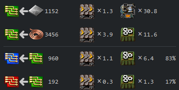
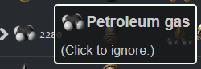
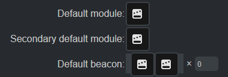
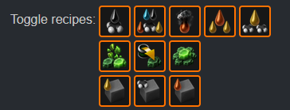
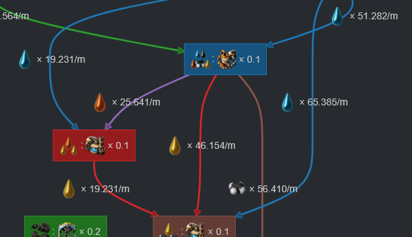
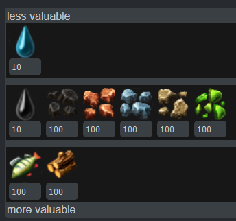

Changelog
2025-06-17
The 2.0 datasets have been updated to 2.0.55. The only substantive difference should be the new piercing round magazine recipe.
2024-10-27
I've made some improvements to the Space Age dataset. Fulgora and Gleba mostly work now, though I still need to teach it about how biochambers eat nutrients; please ignore anything saying they eat coal.
Space platforms and Aquilo still to come.
2024-10-26
I have added a very early, experimental dataset for Space Age to the calculator. Expect bugs, strange issues, missing data, broken URLs, and the like. Some known issues include, and are not limited to:
- Recycling recipes are currently disabled, meaning calculations for Fulgora are not very useful.
- I haven't implemented anything about spoilage yet, so calculations for Gleba are not very useful.
- The calculator doesn't understand asteroids yet, so calculations for space platforms are not very useful.
- I don't even know yet what's wrong with Aquilo.
- All sorts of UI strangeness.
Nauvis and Vulcanus seem to work okay, though. Use the planet selector in the settings to give it a try.
In particular, I want to stress that any URLs you get out of the calculator while using the Spage Age data right now will not be guaranteed to keep working going forward. So don't go too crazy with bookmarks just yet.
2024-10-22
The visualizer's direction setting has been restored. Note that each visualizer type has its own default direction, and changing the type will set the direction to the default.
2024-10-21
The dataset has been updated from 2.0.6 to 2.0.7. There are literally no changes other than the version number.
2024-10-20
Update time again.
- Added a dataset for vanilla Factorio version 2.0.6 and made it the default. There will probably be a newer version when the game actually releases tomorrow, so I'll probably push another update then.
- Space Age support will need more time.
- Existing 1.1.110 URLs will continue to use 1.1.110 data, at least for now. You should be able to switch to the 2.0 data in the settings, and your setup should carry over.
- Support for 2.0 beacon math when using a 2.0 dataset. (This is why I changed the beacon UI in the first place.)
- The old pipe numbers will not be displayed when using a 2.0 dataset, as they are no longer meaningful.
I've fixed several issues since the big release last week, and no doubt more will appear. If you have questions, comments, or bug reports, I am most easily reached on Discord.
2024-10-15
This represents a major update for the Factorio Calculator. It has been virtually rewritten from scratch, updating the nearly ten year old codebase to a more modern version of JavaScript, and paving the way to better supporting Factorio 2.0 and Space Age. Several things have changed along the way, and this document will walk through them.
Factory tab changes
The Factory tab has received a handful of subtle changes. The most obvious is the beacons column.
The old behavior was by far the most common point of confusion with the Factorio Calculator. The new layout more closely matches the game: Each row now has two module slots for beacons, and the count is now the number of beacons. If you want to run the numbers on your 4, 8, or 12-beacon setup, you no longer need to remember to multiply by two.
A more subtle change has to do with the selection of modules. Selecting the first module in a row will now set the remainder of the modules in that row. (Likewise, selecting the module for the first slot in a beacon will set both slots.)
Change the first module to change all the modules.
Between this and the default module options, all of the old arrow buttons have been rendered obsolete, and they have been removed.
This feature actually works now.

The arrows now point the other way.

You can ignore this now.
Setting Changes
The Settings tab has undergone a visual overhaul, and several of the settings have changed.
Set the window title with this.

People have been asking for this for a while.
You can change the miner now.

This is much more flexible than before.
Visualizer Changes
The visualizer UI has changed.

The box & line diagram is less angular.
The old option to change the direction of the visualizations has been removed. The feature was always an afterthought, and the visualizations were always designed to look best in the orientations in which they are now given: Horizontal for the Sankey diagram, vertical for the box-and-line diagram.
Resources Tab

You can control the calculator's priorities.
(As an aside, crude oil and water default to a lower weight because fluids in Factorio generally operate on a scale that is an order of magnitude larger than ordinary items. Dividing their weights in this way makes the numbers work out in a more expected fashion.)
This is not terribly useful in vanilla Factorio, but it may be more important in Space Age, and it opens the door to supporting more complex mods in the future.